Flow analysis using sUAS and lidar data
Helena Mitasova, Anna Petrasova, Vaclav Petras, Justyna Jeziorska, Thomas Zajkowski
North Carolina State University, Raleigh, NC
Center for Geospatial Analytics,
Department of Marine, Earth and Atmospheric Sciences,
NextGen Air Transportation
Wroclaw University, Poland
Advances in 3D mapping
- Lidar and sUAS: increased capacity to
map 3D landscapes and assess the change on (almost) continuous basis
- Improved prediction of flooding and surface water flow
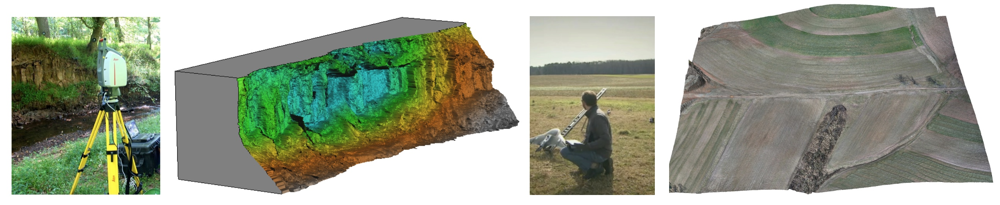
Study site
- NCSU experimental farms: fields, service roads, forest patches and built structures.
- Surveyed by airborne lidar for floodplain mapping and county planning: 2001, 2013, 2015
- Research and development test area for sUAS technologies
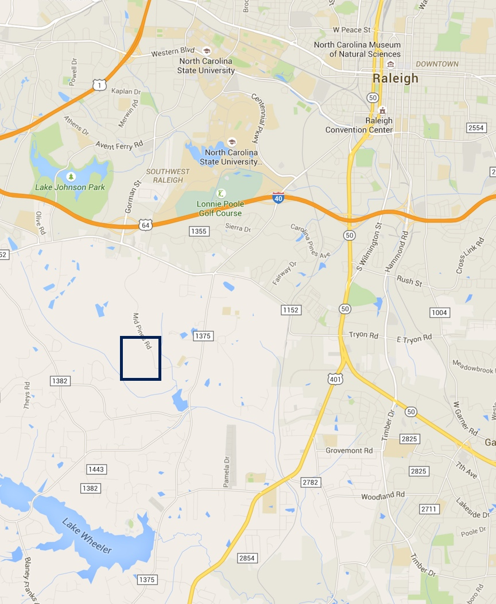
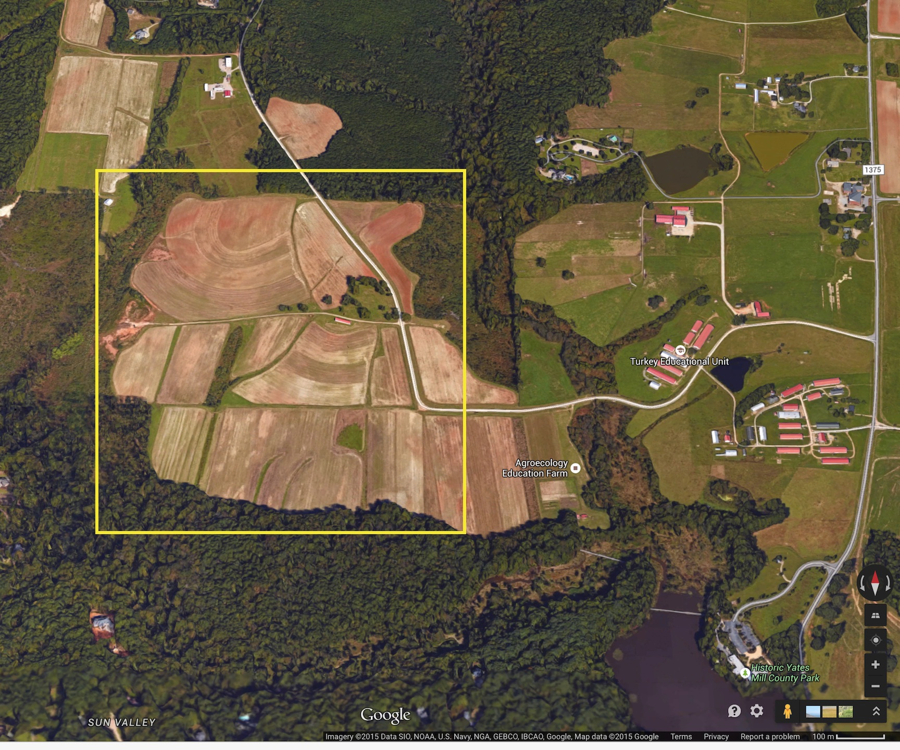
Lidar data
- Lidar survey by Leica ALS-70 in 2013
- multiple return point cloud with point density ~2 pts/m2
- DEM and DSM interpolated at 0.3m resolution
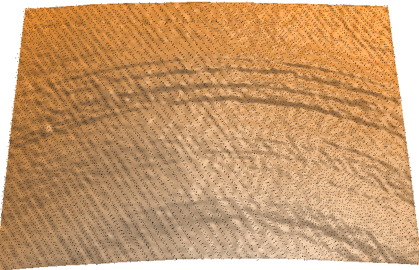
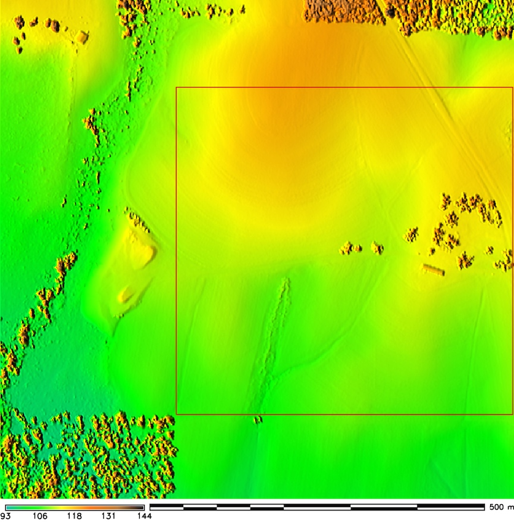
sUAS data
- NGAT Trimble UX5 system, flying at 138m, camera 4900 x 3200
- Orthophoto (0.04 m res.) and Digital Surface Model (DSM, 0.18 m res, 172 pts/m2.)
- Repeated surveys (bi-weekly) for crop growth monitoring
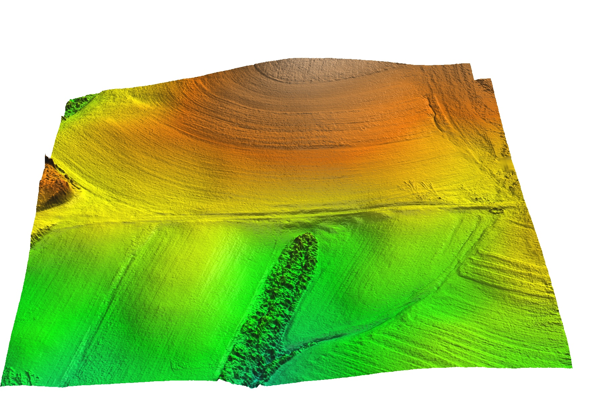
sUAS data properties
- image overlap > 9, almost 1 mil tie points
- processed by agisoft and trimble
- 12 GCP to improve accuracy
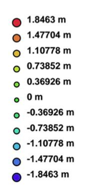
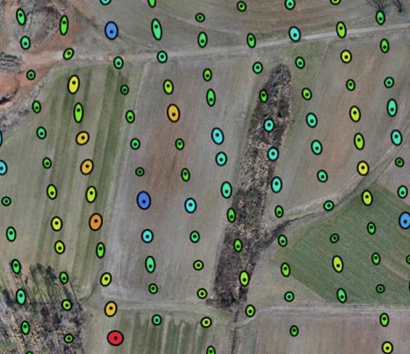
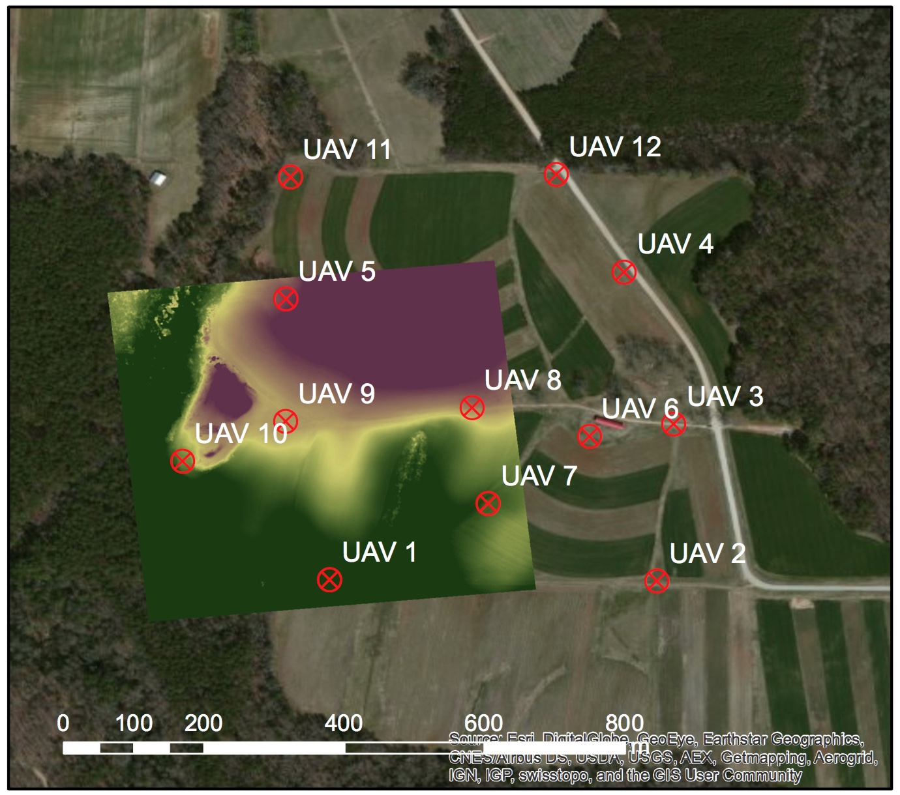
distribution of vertical and horizontal error, avg. camera error 0.3,1.9,0.6 m
sUAS data comparison
- agisoft without and with GCPs
- agisoft and trimble comparison, bowl effect

Lidar and UAS data comparison
- lidar and uas difference maps, mean/median difference in open field
- reflects also changes between 2013 and 2014
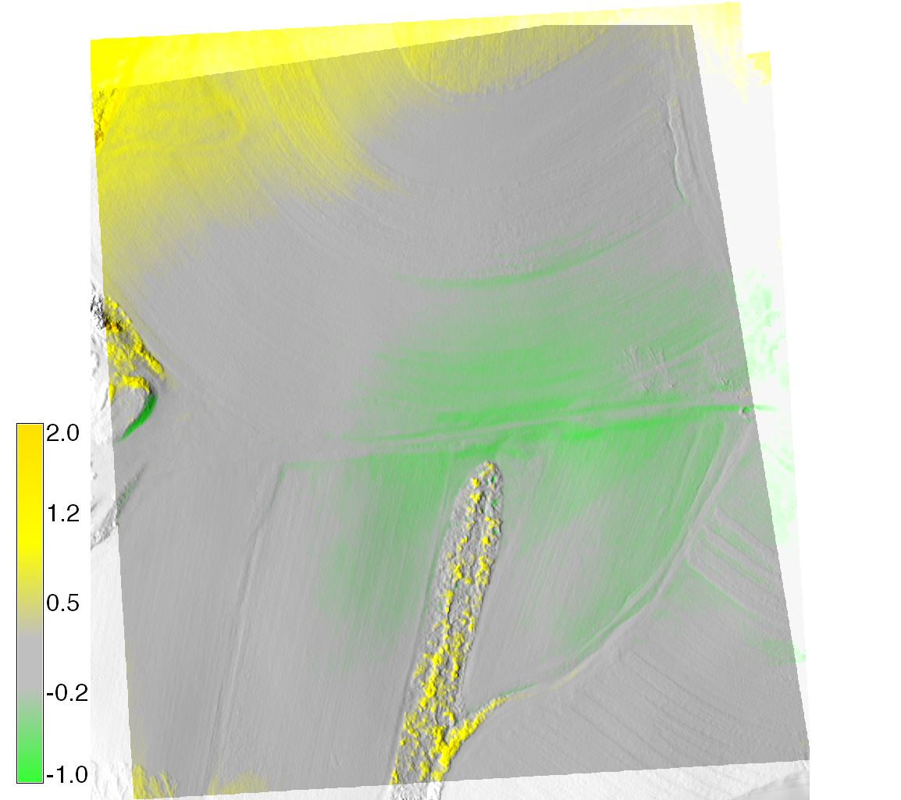
Watershed analysis based on lidar DEM
- LCP MFD flowtracing for watershed boundaries and streams
- shows the watershed extending beyond UAV mapped area
- improved representation of streams
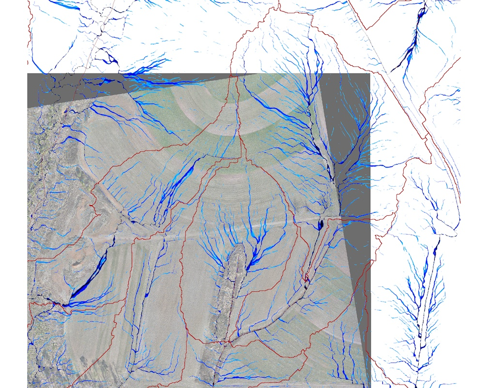
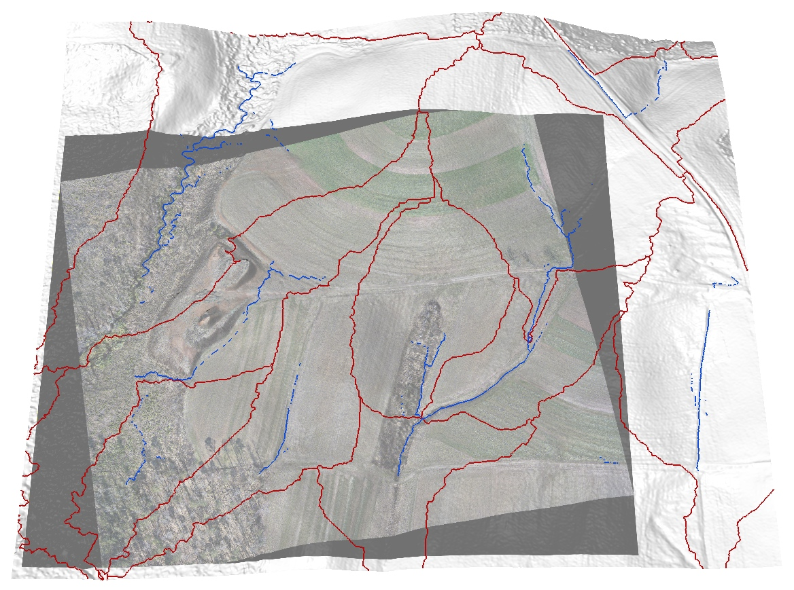
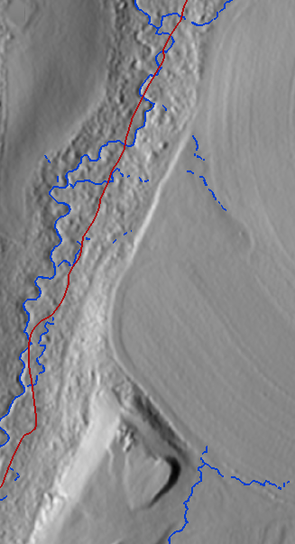
Watershed analysis based on sUAS DSM
- LCP MFD flowtracing - includes dispersed water but no accumulated water in depressions
- watershed boundaries?
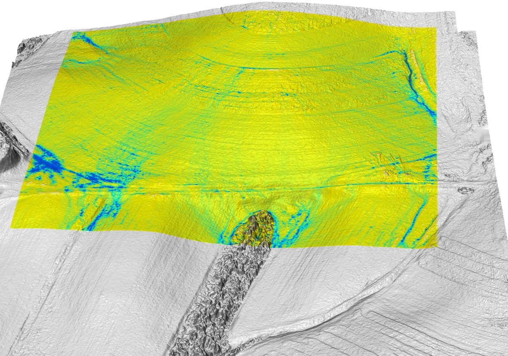
Water flow modeling using sUAS DSM
- DSM of tilled fields at NCSU Lake Wheeler experimental farms
- Simulated surface water depth captures flow redirection by tillage
`
Watershed analysis on fused UAS DSM and lidar DEM
- DSM of tilled fields at NCSU Lake Wheeler experimental farms
- Simulated surface water depth captures flow redirection by tillage
Spatiotemporal modeling of processes
Path sampling method for solving the flow continuity equations


NCSU OSGeoREL
geospatial.ncsu.edu/osgeorel/
- NCSU Open Source Geospatial Research and Education Laboratory
- Member of Geo4all initiative: global network for foss4g education
- 91 labs on all continents
- NCSU NA leading lab: GRASS GIS development, courses, research projects
- GitHub: https://github.com/ncsu-osgeorel